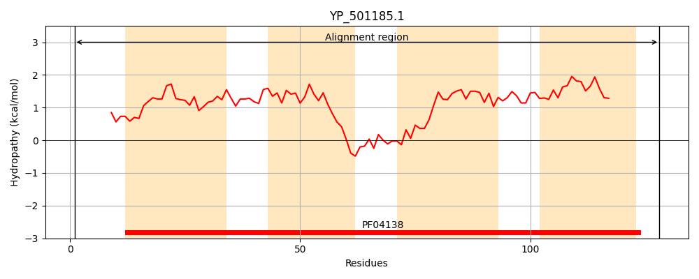
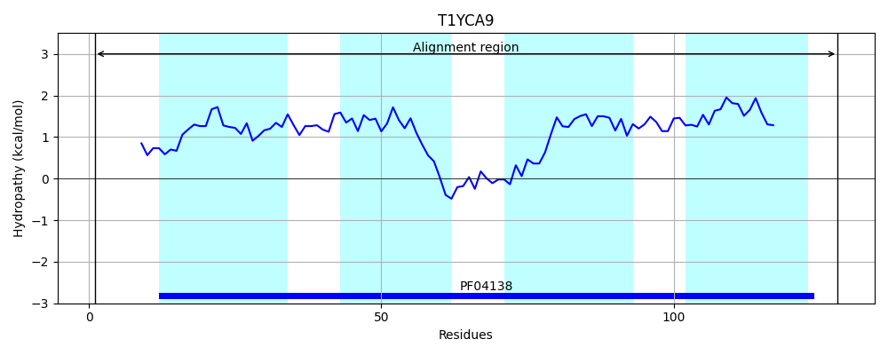
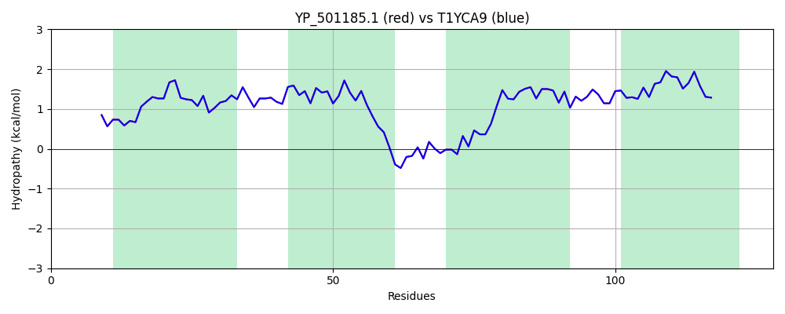

Hit Accession: T1YCA9
Hit TCID: 2.A.129.1.7
Hit Description: gnl|BL_ORD_ID|20212 gnl|TC-DB|T1YCA9|2.A.129.1.7 Monosaccharide translocase (Flippase type) OS=Staphylococcus aureus subsp. aureus CN1 GN=SAKOR_02415 PE=4 SV=1
Mach Len: 128
e:0.000000
Query TMS Count : 4
Hit TMS Count: 4
TMS-Overlap Score: 4.400000
Predicted Substrates:None
BLAST Alignment:
| Protein Hydropathy Plots: | |
|---|---|
|  |  |
Pairwise Alignment-Hydropathy Plot: | |
|  | |